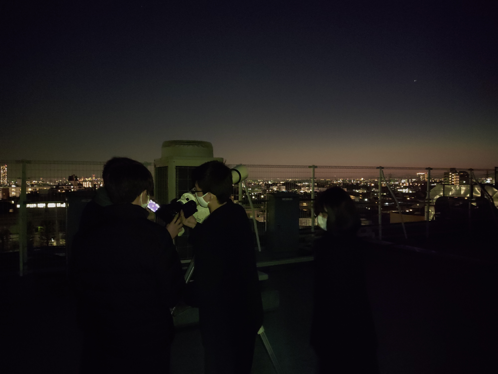

都市大等々力理科部とは？
理科部では、「自然を愛する心」と「未知なるものへの探求心」の２つの心を育てるべく、「化学技術や理学への興味・関心の育成」「科学的思考の育成」「基礎研究への手法・技術力の育成」「他者に伝える力・技術の育成」を行っています。
日々の活動は、各分野ごとに５つの班に分かれて専門的な活動を行っています。この他にも、SAとして様々な活動の支援も行っています。
各班の活動内容

班員で協力して完成させたときの達成感はひとしおです！


理科部の中でモノづくりが好きな人が集まっている班です。
脊椎動物研究班
脊椎動物研究班では、様々な生き物の解剖や骨格標本作成を行なっています。班員で協力して完成させたときの達成感はひとしおです！
昆虫調査班
昆虫調査班では、多摩川河川敷で昆虫採取を行い昆虫の分布などを調べてたり、乾燥標本や樹脂標本を作成して昆虫のことを観察したりしています。
水棲生物調査班
水棲生物をメインに解剖、標本作成などの活動を行っています。他にも、多摩川でアミやトラップを使って捕獲した水棲生物を観察、飼育をしています。

天体観測では惑星を望遠鏡で見たり、星座の観察を、プラネタリウム製作では、ドームや投影機を製作しています。
天文班
天文班では、主に天体観測や星の勉強、プラネタリウムの製作をしています。天体観測では惑星を望遠鏡で見たり、星座の観察を、プラネタリウム製作では、ドームや投影機を製作しています。
技術班
技術班では、エコ1チャレンジカップに出場する電気自動車を製作する車班とプログラミングをメインとしているプログラミング班に分かれています。理科部の中でモノづくりが好きな人が集まっている班です。
本校が開催している学校説明会もしくはオープンスクールにご参加していただくと部活動見学をする時間がございますので、部活動見学を希望されるに方はこちらに参加していただきますようお願いします。
注）部活動見学 と書かれているイベントにご参加ください。
イベント予約サイト (中学)
イベント予約サイト (高校)